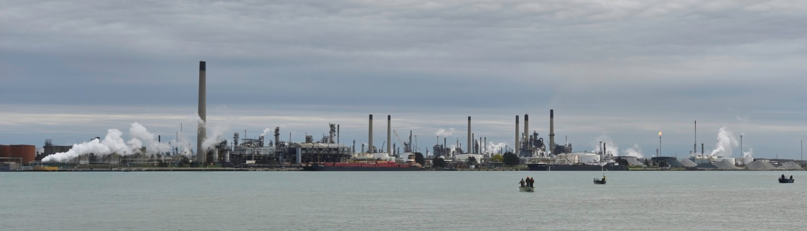
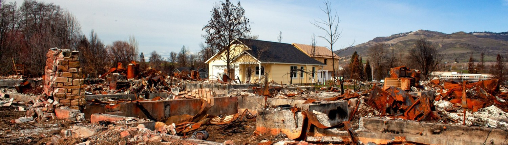
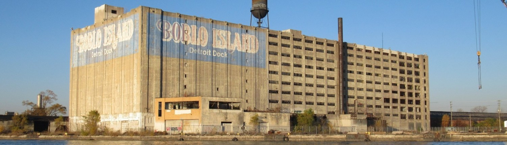

BREAKING WATER NEWS
Cheap Cybersecurity Defenses Exist, But They’re Not Reaching Water Utilities Who Need Them
An era of cyberattacks on critical infrastructure has begun. Rural water utilities have vulnerabilities and advantages.
(Click Image For Full News)

Dealing With The Soup of Chemicals That Can Get Into Your Drinking Water
All the things that go down the drain and end up at the waste water treatment plant are not removed there. It's a soup of chemicals.
(Click Image For Full News)

Constant, Compounding Disasters Are Exhausting Emergency Response
Fires, droughts, floods, power outages. The interval between disasters is shortening, or in some cases disappearing altogether.
(Click Image For Full News)

Detroit Flooding Previews Risks from a Warming Climate
Urban infrastructure in many cities was not built for current and future climate pressures.
(Click Image For Full News)